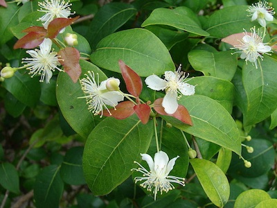

Árvores Folhosas

Se sua árvore de bonsai é uma espécie folhosa, ela pode ser perene ou decídua.
Além disso, ela pode ter folhas opostas (duas folhas emergindo no mesmo ponto) ou alternadas.
Características
Folhosas, decíduas, com folhas opostas
Folhosas, decíduas, com folhas alternadas
Folhosas, perenes, com folhas opostas
Folhosas, perenes, com folhas alternadas